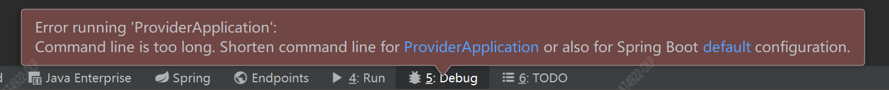
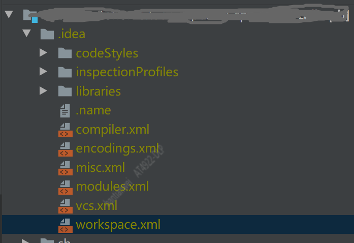

Command line is too long. Shorten command line for SpringBootMainApplication or also for Application
问题
Srping Boot 项目在启动报错
Error running ‘SpringBootMainApplication’: Command line is too long. Shorten command line for SpringBootMainApplication or also for Application default configuration.
- 
解决方案
- 修改 修改项目下 .idea\workspace.xml
- 
- 找到节点
1 | <component name="PropertiesComponent"> |
- 增加
1 | <property name="dynamic.classpath" value="true" /> |
- 最后如
1 | <component name="PropertiesComponent"> |